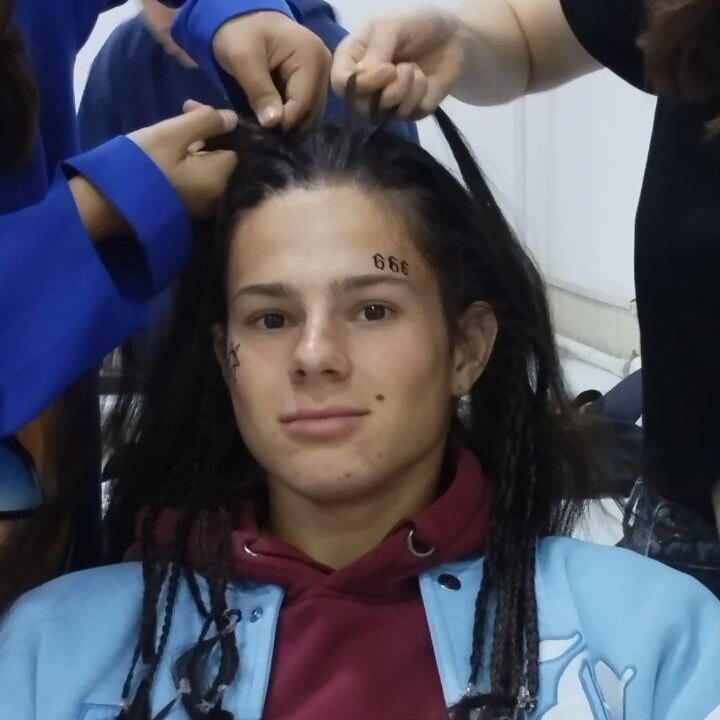

My Resume
Skills
I have skills in working with the Microsoft office package.
I can competently maintain accounting documents and economic reports.
Trained in competent communication with people
Education
Secondary SCHOOL No. 15 2011 – 2022, Bishkek city
Confidently completed Secondary education at School No. 15 with grades 4/5
Ala-Too University
2023 – Present

Martynov Eduard
Climber of Kyrgyzstan, Medal for merits in sports, Diploma for
participation in public life, Diploma for participation in the Olympiad in
mathematics
About me
Here are some reasons why you should choose me: I study at Ala-Too
University with a degree in international business and Economics, and
my average score is 90 out of 100. I also have excellent knowledge in
mathematics, accounting and other fields.
I own programs like Excel,
Google Docs, Google Sheets, and other data analysis tools, and I like it. I
can confidently use various functions and format the data into readable
tables. I worked in several places, performed routine tasks and had access to the family's
accounting files, so I have experience working with data.
I have good
communication skills, I communicate well with people, and I can work in a
team. I also know Russian, English and I am learning German. I believe
that I deserve this job, and I am sure that I will cope with the tasks
assigned to me!